Twenty short, looping animations (14 on how SCOOT works, 6 on designing a scheme) that build SCOOT up one idea at a time, in lecture order, plus a beginner recap that joins animations 4, 6 and 7 into one story, and one animation that plays them all together. Each has a plain-language explanation and the numbers to look for. The same GIFs play in the slides and in PowerPoint: right-click to save any of them.
Everything together · about 9 minutes
▶SCOOT, start to finish: all 21 animations in one
Short on time, or want the big picture first? This single animation plays every animation below in lecture order, in three parts: seeing the traffic (1–7 and the beginner recap), deciding the timings (8–14) and designing a scheme (15–20). Each chapter opens with a title card, keeps its plain-language explanation and key numbers on screen, and a bar along the top shows how far through you are.
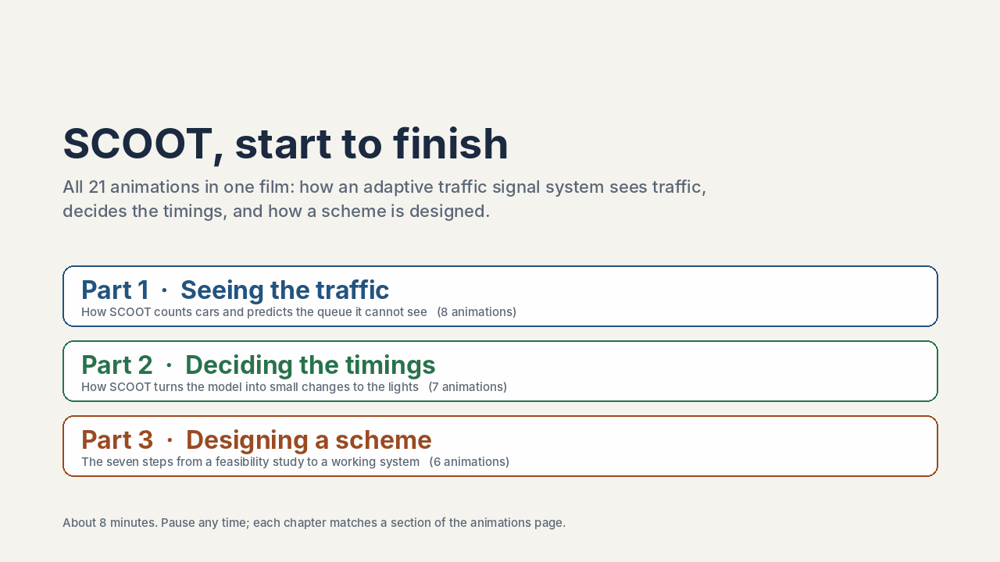
All 21 animations in lecture order, about 9 minutes, then it loops. It is a large file (about 15 MB), so it may take a moment to load. Download the GIF.
Part 1: how SCOOT sees traffic · Part 2: how it decides the timings · Part 3: how a scheme is designed. Each chapter matches a section of this page.
Interactive · the whole process · about 5 minutes
★The whole process on one street
A guided tour of a complete SCOOT project on a simulated waterfront road with four junctions: record the existing conditions, see how SCOOT reads the street and makes its three decisions, choose the junctions and regions, follow the seven design steps, look at the hardware, then test the fixed plan against SCOOT in an evening rush. Every car drives itself, and two identical streets run side by side so the comparison is fair.
Nine chapters · four live charts (flow profile, model queue against real queue, signal timings, delay before and after) · switch between the fixed-plan street and the SCOOT street at any time. Illustrative simulation, not real SCOOT and not a real road.
Interactive · a realistic 3D street
3DLoop → platoon → queue on a real-looking street
The same ideas as animations 2 and 4–7, on a simulated street you can fly around. Each car picks its own speed and follows the car in front, so the platoon spreads out and the queue forms and clears by itself. SCOOT sees only the detector loop: it builds the profile, applies Robertson’s recipe and predicts the queue, and the console draws that prediction over the real queue in the street. At the end of the guided tour, SCOOT starts moving the green to meet the platoon.
Five cameras (overview, detector loop, follow the platoon, stop line, drone) · a six-step guided tour · a slider for the stop-line green · a button that lets SCOOT adjust the offset 4 s per cycle. In steady cycles SCOOT’s predicted waiting is within about 15% of the real waiting in the simulation. Illustrative simulation, not real SCOOT.
Foundation · the elastic plan
1Small nudges, all morning
A fixed plan keeps the same green all morning. When the rush hour brings more traffic than that green can clear, a queue piles up. SCOOT instead nudges the timings a few seconds at a time, following the traffic like a thermostat follows the temperature.
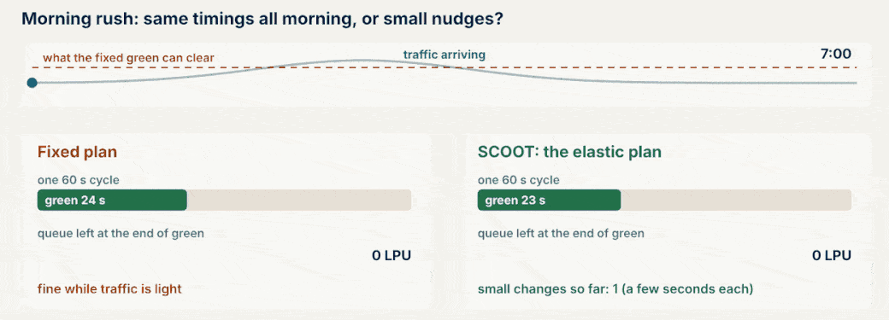
Morning rush: a fixed 24 s green against SCOOT’s green, which grows and shrinks with the traffic.
About 192 timing decisions an hour at one junction (120 split, 60 offset, 12 cycle), each only a few seconds.
Foundation · detectors
2Counting cars far up the road
The SCOOT loop sits just after the upstream junction, not at the stop line. It sees each platoon long before it arrives, so the model can predict when the cars reach the stop line and get the green ready.
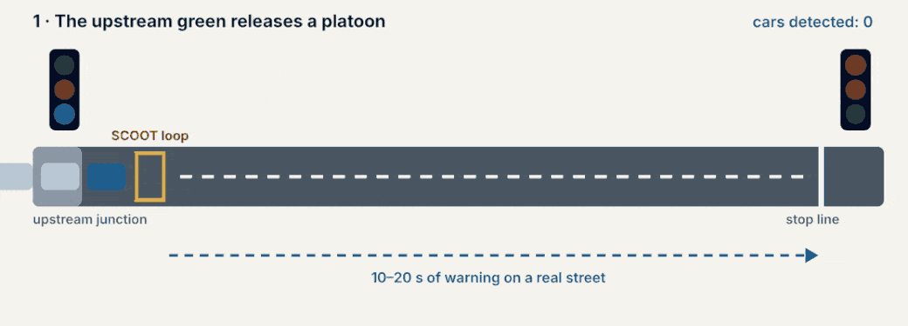
A platoon released by the upstream green is counted at the loop, then arrives on green.
10–20 s of warning on a real street; the loop is read 4 times a second.
Foundation · LPUs
3Why a bus counts more than a car
SCOOT does not just count vehicles. It measures traffic in link profile units (LPUs), which add how long the loop is covered. A long or slow vehicle covers the loop longer and needs more green, so it scores more.
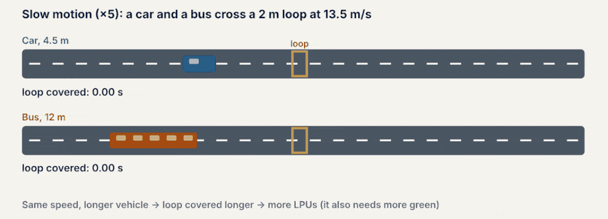
Slow motion (×5): a 4.5 m car and a 12 m bus cross a 2 m loop at 13.5 m/s.
SCOOT keeps one bar for every second of the cycle: how many LPUs usually pass the loop at that moment. Each new cycle is blended in gently, so the platoon’s place in the cycle stands out while random noise fades.
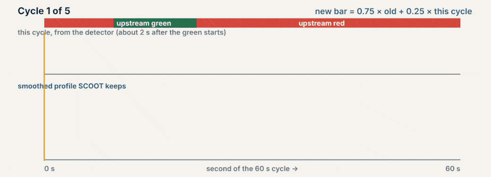
Five cycles: this cycle’s counts (top) and the smoothed profile SCOOT keeps (bottom).
New bar = 0.75 × old bar + 0.25 × this cycle; one odd cycle can move the profile only a quarter of the way.
Foundation · dispersion
5The platoon spreads out
Cars leave the upstream junction together, but drivers differ: fast ones pull ahead and slow ones fall behind. By the stop line the bunch is longer and thinner. SCOOT must predict this, because what matters is when cars reach the stop line.
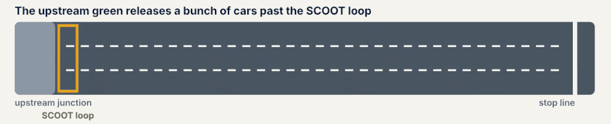
Green = fast drivers, orange = slow drivers; compare the spread at the loop and at the stop line.
Same cars, arriving over a longer time with a lower peak. A longer road means more spreading.
Foundation · dispersion
6Robertson’s recipe, one second at a time
Each second, SCOOT predicts the arrivals at the stop line as a share F of the traffic seen at the loop plus the rest of last second’s arrivals carried over. It is a running average that shifts and smooths the platoon.
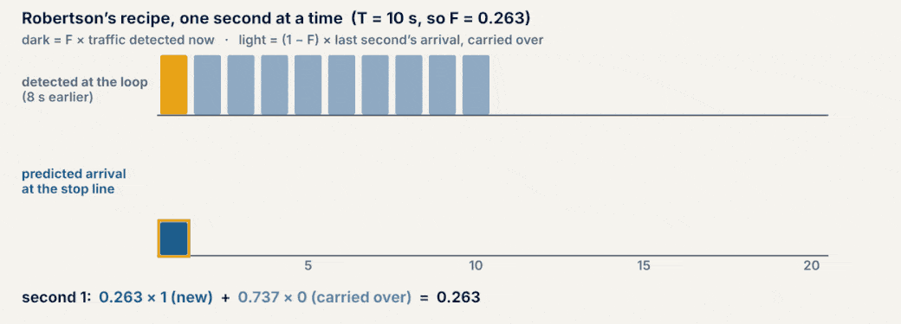
Dark = F × traffic detected now; light = (1 − F) × last second’s arrival, carried over.
T = 10 s: lag 0.8 T = 8 s, F = 1 ÷ (1 + 0.35 × 0.8 × 10) = 0.263; the peak reaches 0.95 and the platoon lasts about 25 s.
Foundation · the queue model
7The queue is a bathtub
Arrivals are a tap that never stops. During red the plug is in, so the queue grows. During green the plughole drains it at the saturation occupancy (SATO). SCOOT never sees this queue: it models it from the upstream counts.
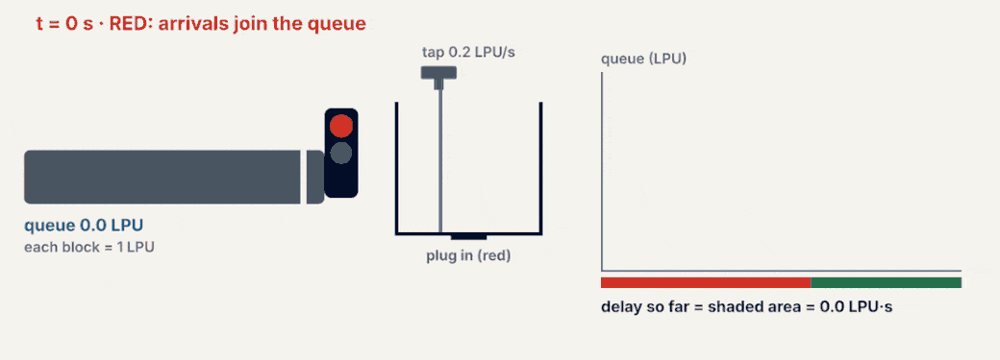
Arrivals 0.2 LPU/s, red 35 s, green 25 s, SATO 0.6 LPU/s, no queue at the start.
End of red: 7 LPU. It drains at 0.6 − 0.2 = 0.4 LPU/s and clears 17.5 s into green. Delay = shaded area = 183.75 LPU·s.
The calculation, step by step
Every second the queue changes by arrivals in − departures out. On red nothing leaves, so the queue rises at the arrival rate. On green it leaves at SATO, but cars keep arriving, so it falls at arrivals − SATO. That is why the two sides of the triangle have different slopes.
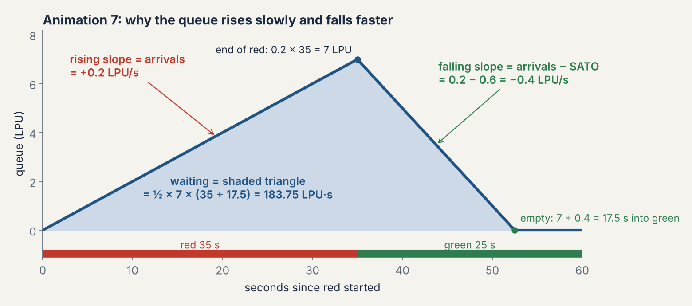
Step
Rule
Numbers
Result
1. Red: rising slope
slope = arrivals
0.2 LPU/s
+0.2 LPU/s
2. Queue at end of red
arrivals × red time
0.2 × 35
7 LPU
3. Green: falling slope
slope = arrivals − SATO
0.2 − 0.6
−0.4 LPU/s
4. Time to clear
queue ÷ net drain
7 ÷ 0.4
17.5 s into green
5. Total waiting
area of triangle = ½ × height × base
½ × 7 × (35 + 17.5)
183.75 LPU·s
6. Average wait
waiting ÷ traffic in the cycle
183.75 ÷ (0.2 × 60)
about 15 s per LPU
If SATO were only 0.4 LPU/s, the falling slope would be 0.2 − 0.4 = −0.2, the queue would need 35 s to clear (longer than the 25 s green), and it would not empty before the next red.
Beginner link · animations 6 and 7 together
6+7From arrivals to queue, one second at a time
Animations 6 and 7 are two halves of one calculation. Every second, Robertson’s recipe (6) works out how many LPU reach the stop line, and those arrivals are the bathtub’s tap (7). Red holds them in the queue; green lets them drain away. The bottom line of the animation shows both small sums for each second, and at the end the same arrivals are replayed with an earlier green.
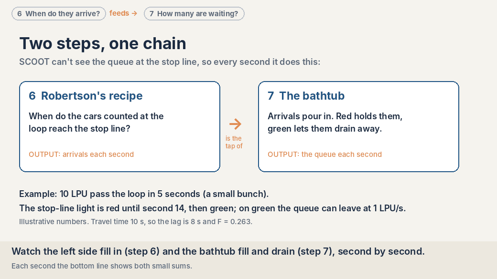
Left: step 6 predicts the arrivals. Right: step 7 turns them into a queue. Then the same arrivals meet an earlier green.
Each second: arrival = 0.26 × (loop count 8 s earlier) + 0.74 × (last second’s arrival); queue = queue before + arrival − departures (0 on red, up to 1 LPU/s on green). Red until second 14: queue peaks at 6.8 LPU, 58 LPU·s of waiting. Green from second 10: 2.8 LPU, 19 LPU·s. Illustrative numbers.
The calculation, step by step
Here the arrivals change every second, so the slope changes every second too. On red, slope = that second’s arrival. On green, slope = arrival − 1 (SATO). The climb is steepest when the bunch arrives; the fall starts slowly because the tail of the bunch is still pouring in, then gets steeper as arrivals die away. That is why the curve is a hump, not a triangle.
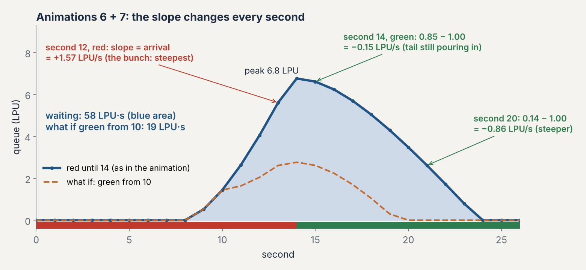
Second
Step 6: arrival = 0.26 × loop count 8 s earlier + 0.74 × last arrival
Light
Leaving
Slope
Step 7: queue = before + arrival − leaving
8
0.26 × 2.0 + 0.74 × 0.00 = 0.53
red
0
+0.53
0.00 + 0.53 − 0 = 0.53
9
0.26 × 2.0 + 0.74 × 0.53 = 0.91
red
0
+0.91
0.53 + 0.91 − 0 = 1.44
10
0.26 × 2.0 + 0.74 × 0.91 = 1.20
red
0
+1.20
1.44 + 1.20 − 0 = 2.64
11
0.26 × 2.0 + 0.74 × 1.20 = 1.41
red
0
+1.41
2.64 + 1.41 − 0 = 4.05
12
0.26 × 2.0 + 0.74 × 1.41 = 1.57
red
0
+1.57
4.05 + 1.57 − 0 = 5.61
13
0.26 × 0.0 + 0.74 × 1.57 = 1.15
red
0
+1.15
5.61 + 1.15 − 0 = 6.77
14
0.26 × 0.0 + 0.74 × 1.15 = 0.85
green
1.00
-0.15
6.77 + 0.85 − 1.00 = 6.62
15
0.26 × 0.0 + 0.74 × 0.85 = 0.63
green
1.00
-0.37
6.62 + 0.63 − 1.00 = 6.24
16
0.26 × 0.0 + 0.74 × 0.63 = 0.46
green
1.00
-0.54
6.24 + 0.46 − 1.00 = 5.71
17
0.26 × 0.0 + 0.74 × 0.46 = 0.34
green
1.00
-0.66
5.71 + 0.34 − 1.00 = 5.05
18
0.26 × 0.0 + 0.74 × 0.34 = 0.25
green
1.00
-0.75
5.05 + 0.25 − 1.00 = 4.30
19
0.26 × 0.0 + 0.74 × 0.25 = 0.18
green
1.00
-0.82
4.30 + 0.18 − 1.00 = 3.48
20
0.26 × 0.0 + 0.74 × 0.18 = 0.14
green
1.00
-0.86
3.48 + 0.14 − 1.00 = 2.62
21
0.26 × 0.0 + 0.74 × 0.14 = 0.10
green
1.00
-0.90
2.62 + 0.10 − 1.00 = 1.72
22
0.26 × 0.0 + 0.74 × 0.10 = 0.07
green
1.00
-0.93
1.72 + 0.07 − 1.00 = 0.79
23
0.26 × 0.0 + 0.74 × 0.07 = 0.05
green
0.85
-0.79
0.79 + 0.05 − 0.85 = 0.00
Seconds 0–7: nothing has reached the stop line yet, so the queue is 0. Total waiting = sum of the queue over all seconds = 58 LPU·s. With the green from second 10 the same sums give 19 LPU·s.
Beginner recap · animations 4, 6 and 7 together
★From counted cars to a predicted queue
SCOOT never sees the queue at the stop line. This animation puts three earlier ideas in a row, so you can watch them work together on one road. 1. Remember: the loop counts cars every second, and SCOOT blends each noisy cycle into a memory of the usual pattern (animation 4). 2. Spread: it shifts that pattern about 8 s down the road and smooths it, because fast and slow drivers drift apart (animation 6). 3. Queue: those predicted arrivals pour into a bathtub that fills on red and drains on green (animation 7).
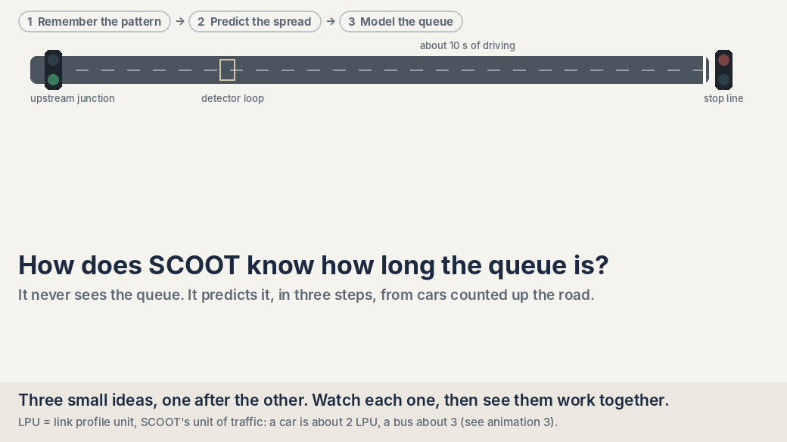
One road, three steps: remember the pattern, predict the spread, model the queue. About 1.5 minutes, then it loops.
Memory = ¾ old + ¼ new · arrivals = 0.26 × seen 8 s earlier + 0.74 × carried over · the bunch lands on red: 10.9 LPU queue, empty 16 s into green, 307 LPU·s of waiting. Starting the green 22 s later cuts that to about 72 LPU·s: the job of the offset optimiser (animation 11). Illustrative numbers: 60 s cycle, red and green 30 s each, SATO 0.8 LPU/s.
Foundation · saturation occupancy
8How fast a queue drains
When the light turns green the drivers need a moment to react (the start lag); then the queue crosses the stop line at a steady top rate. That rate is SATO. A lane with a bigger SATO empties sooner and needs less green.
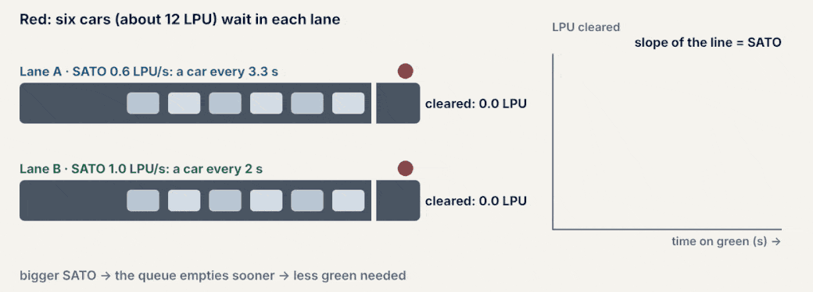
Two lanes with the same six-car queue: SATO 0.6 LPU/s (a car every 3.3 s) and 1.0 LPU/s (a car every 2 s).
Start lag 3 s; the slope of the cleared-LPU line is SATO.
Foundation · degree of saturation
9Is the green big enough?
The degree of saturation (DoS) compares what arrives in a cycle with what the green can clear. SCOOT aims to keep the busiest link near 90%, leaving a margin for random surges.
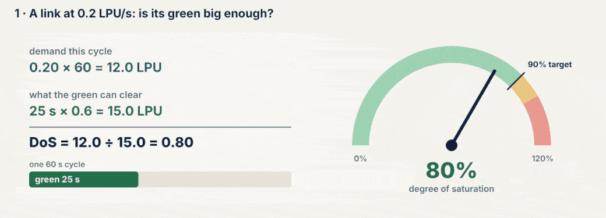
One link: traffic grows, the gauge goes into the red, and the split optimiser gives the stage more green.
A few seconds before every stage change, SCOOT asks the model: change it 4 s earlier, keep it, or 4 s later? It picks the option that keeps the worst link (the highest DoS) lowest, and stores a small permanent change too.
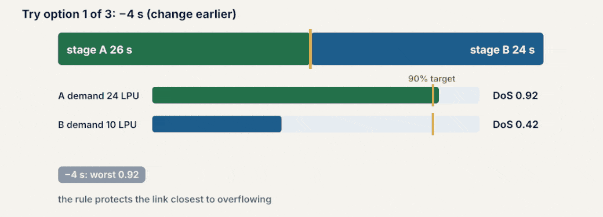
Stage A demand 24 LPU, stage B 10 LPU; the three options and their worst DoS.
Worst DoS: −4 s 0.92, no change 0.80, +4 s 0.71 → +4 s wins; the stored plan moves by 1 s (30 → 31 s).
Advanced · offset optimiser
11Walking towards the green wave
Once a cycle, SCOOT tries the offset between two junctions 4 s earlier, unchanged and 4 s later, and keeps the one with the lowest performance index (delay + stops). Cycle by cycle it walks towards a green wave.
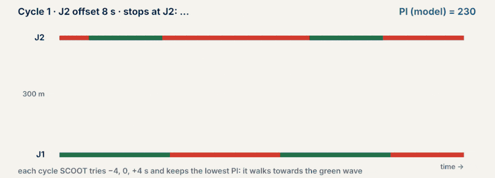
Time–distance picture of two junctions 300 m apart; each line is a car.
Offset 8 s → 16 s → 20 s: stops at J2 fall from 5 to 0 and the PI from 230 to 94.
Advanced · cycle optimiser
12Longer cycles for the peak
Every few minutes SCOOT checks the busiest (critical) junction in the region. If it is above about 90% the cycle gets longer, which wastes a smaller share of time on stage changes; when the peak eases it holds or shortens.
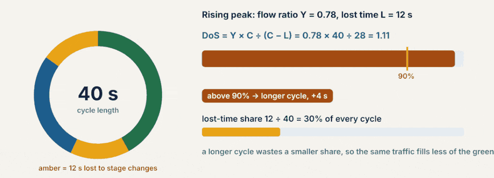
Flow ratio Y = 0.78 and lost time L = 12 s during the rising peak, then Y falls to 0.70.
DoS = Y × C ÷ (C − L): 44 s → 1.07, 64 s → 0.96, 88 s (Y 0.70) → 0.81. Lost-time share 27% → 19% → 14%.
Foundation · validation
13Tuning the model to the street
Before SCOOT goes live, an engineer with a stopwatch checks each link. If the model’s queue clears at a different time from the real one, the street is right and the model is tuned.
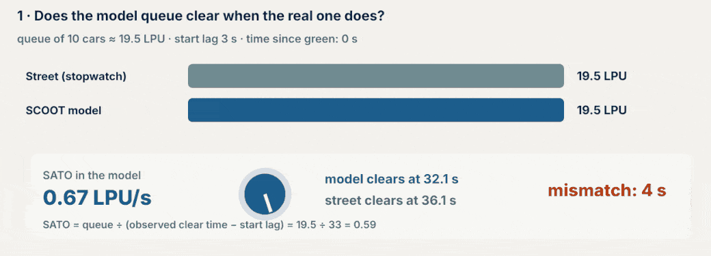
Queue of 10 cars ≈ 19.5 LPU, start lag 3 s; the model and the street disagree, then SATO is turned down.
Model (SATO 0.67) clears at 32.1 s, street at 36 s → SATO = 19.5 ÷ (36 − 3) = 0.59 LPU/s: now they agree.
Foundation · comparison
14Fixed time, actuated and SCOOT
Fixed time follows a stored plan; actuated signals extend the green while cars keep arriving at the stop line; SCOOT predicts from upstream and adapts gently. Same junction, same cars, one simulated hour in SUMO (Lab F3).
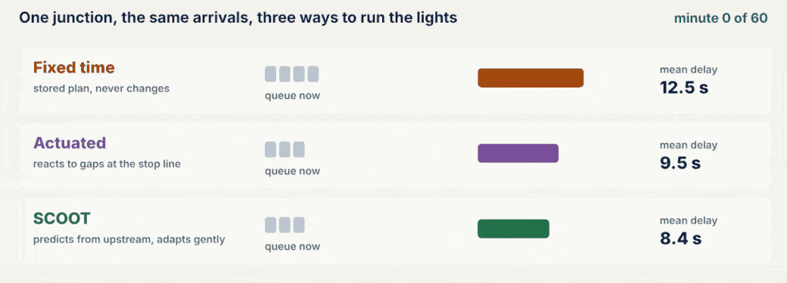
Queues and mean delay build up over one simulated hour.
Mean delay: fixed 18.96 s, actuated 14.48 s, SCOOT 12.79 s (33% less than fixed, 12% less than actuated).
Design · overview
15The seven design steps
From 'is it worth it?' to switch-on day. Each step hands something to the next: a before study, a network inventory, regions, loop drawings, a database, a validated model and an after study.
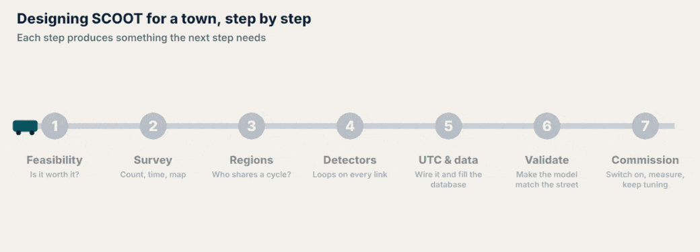
Seven milestones light up in order; the last banner is a reminder that monitoring never stops.
Feasibility → survey → regions → detectors → UTC & data → validation → commissioning.
Design · step 2 survey
16Measuring the saturation flow
Stand at the stop line with a stopwatch. Start when the first queued vehicle crosses, stop when the 16th crosses: 15 gaps.
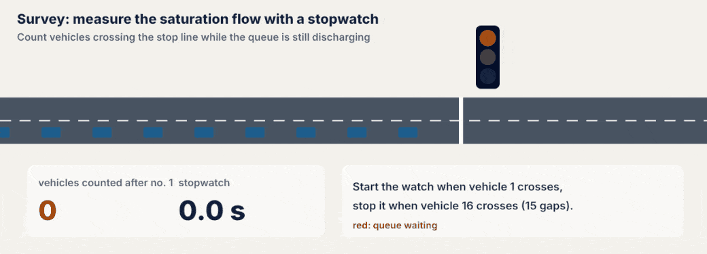
A queue of 18 cars discharges at 2 s spacing after a 2 s start lag.
s = 15 ÷ 30 s = 0.5 veh/s = 1800 veh/h per lane.
Design · step 3 regions
17Dividing the town into regions
Each node needs its own cycle for 90% saturation. The busiest (critical) node sets the cycle for its region; a long link makes a natural boundary; crossings can double-cycle.
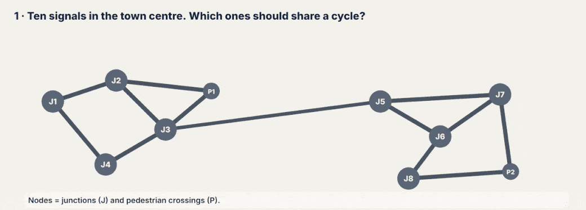
Ten nodes, their needed cycles, two regions and double-cycled crossings.
C = 0.9L ÷ (0.9 − Y): J3 needs 60 s, J6 90 s; the 900 m link (≈ 68 s) splits them.
Design · step 4 detectors
18Where should the loop go?
Count back from the stop line in seconds of driving, not metres. Under about 6 s is too late; 8–15 s is ideal. One 2 m loop covers at most two lanes.
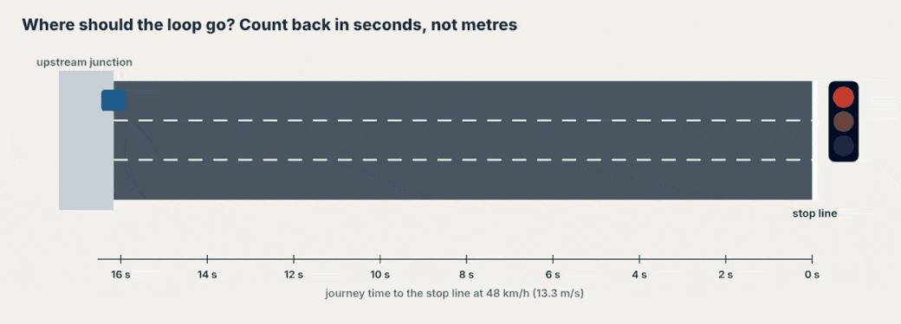
Red, amber and green zones on a 48 km/h link; two loops at 180 m.
180 m ÷ 13.3 m/s = 13.5 s, inside the 8–15 s zone.
Design · step 5 UTC & database
19Wiring it up
Loops feed an outstation in the signal cabinet, which talks to the UTC computer running the SCOOT model; timings travel back to the controller. Each link gets a database record.
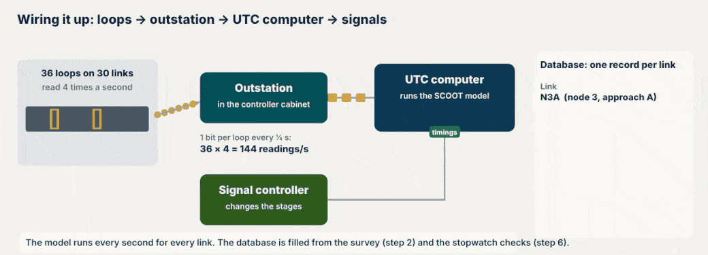
Readings flow up, timings flow down, and one link's record fills in.
36 loops × 4 readings/s = 144 readings/s; N3A journey time 13.5 s, max queue clear 62 s.
Design · simulation
20One busy junction: old plan vs SCOOT-style plan
A 90-minute morning simulated second by second (simplified teaching model). The old 70 s plan never changes; the elastic plan moves splits a few seconds per cycle and reviews the cycle every few minutes.
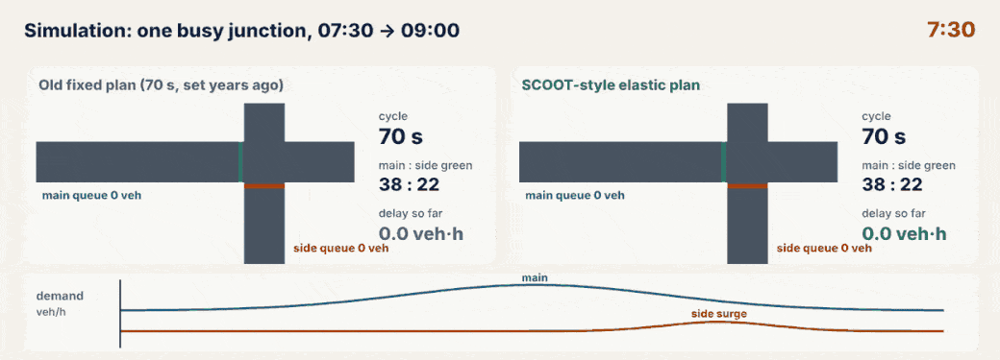
Queues, cycle, split and delay for both plans, with the demand curve below.
Delay 15.8 → 10.7 veh·h; mean 20.2 → 13.6 s per vehicle (one junction; networks typically gain 12–20%).
Want to try these yourself? The Foundation and Advanced pages have interactive versions, and the group work page turns them into class questions.